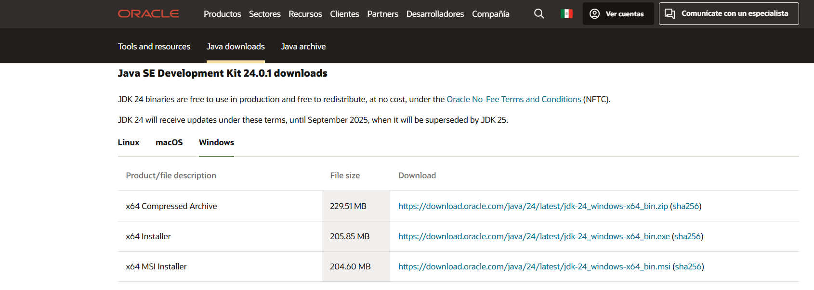
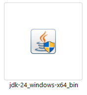
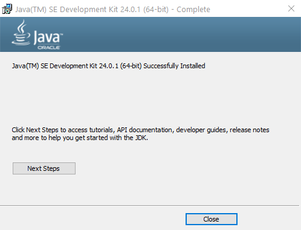
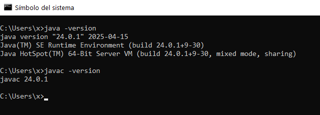

Installing Java JDK
To run and develop Java applications, you need to install the Java Development Kit (JDK). The JDK includes the Java Runtime Environment (JRE), the Java compiler, and other development tools.
Step 1: Download the JDK
Go to the official Oracle website or use a trusted open-source alternative like Adoptium.
We recommend using Temurin for general development due to its open license and stability.
Step 2: Choose the Right Version
- For modern Java projects, Java 17/21 or Java 24 (LTS) is recommended.
- Choose your operating system: Windows, macOS, or Linux.
- Download the installer or the zip archive.

Step 3: Install the JDK
For Windows
- Run the installer and follow the setup instructions.

- During installation, allow it to set the JAVA_HOME environment variable if prompted.

- After installation, verify it was successful.

For macOS/Linux
- Extract the
.tar.gzor use package managers like: - Homebrew (macOS):
bash brew install openjdk@21 - APT (Ubuntu):
bash sudo apt install openjdk-21-jdk
Step 4: Configure Environment Variables
On Windows
- Set
JAVA_HOMEto the JDK installation path (e.g.,C:\Program Files\Java\jdk-21). - Add
%JAVA_HOME%\binto yourPathvariable.
On macOS/Linux
Edit your ~/.bashrc, ~/.zshrc, or ~/.profile:
export JAVA_HOME=/path/to/your/jdk
export PATH=$JAVA_HOME/bin:$PATH